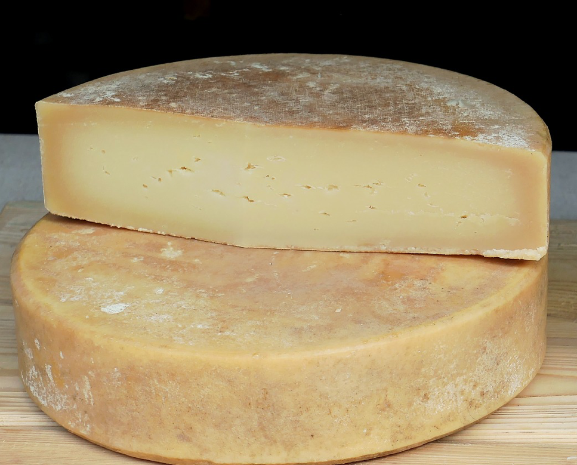

La brucellose, on vous explique tout
La Confédération Nationale pour la Promotion Fromagère (CNPF) à diffusé un message de prévention au sujet de la découverte d'une nouvelle souche virale de Brucellose qui se propage dans tous les cheptels français. Les études qu'ils ont mené sur des échantillons de lait provenant des 30 principaux départment producteurs de fromages est sans appel car la plupart des échantillons traités sont contaminés. Pour tout comprendre de cette maladie et connaître les mesures prises en conséquences, nous vous invitons à lire l'intégralité de cette page.
la brucellose, qu'est-ce-que c'est ?
La brucellose est une maladie qui se transmet de l'animal (bovins, porcs, ovins, caprins, équidés, camélidés, chien, etc.) vers l'Homme. Celle-ci est dû à une bactérie du genre Brucella, et peut être bénigne et spontanément résolutive, ou bien sévère et chronique. Dans une forme chronique, cette maladie peut durer plusieurs années et entraîner d'importantes conséquences neurologiques et cardiaques. Cependant elle n'entraîne la mort que dans de rares cas, même avec l'absence d'antibiotique. Entre 2011 et 2015, entre 16 et 32 cas de brucelloses humaine ont été déclarés chaque année en France.
Les symptômes de la brucellose sont des maux de têtes, des douleurs articulaires, des troubles digestifs, et des irritations buccales.
comment cette maladie se transmet-elle ?
Cette maladie se transmet à l'Homme le plus souvent par ingestion de produits laitiers frais provenant d'animaux infectés par la bactérie. La bactérie peut être présente dans les fromages si les ingrédients proviennent d'animaux infectés. Les fromages les plus susceptibles d'être contaminés sont les fromages produits avec du lait. La bactérie étant présente sur les animaux produisants du lait.
les actions entreprise
En France, la brucellose est réglementée chez les bovins, ovins, caprins, et porcins et fait l'objet de notifications nationale à la Commission Européenne et à l'OIE. Tout signe évocateur, notamment des avortements, doit faire l'objet d'investigations complémentaires pour rechcercher la brucellose. Les élevages sont régulièrement contrôlés par des dépistages sérologiques. Les élevages produisant du lait cru le sont, eux, chaque année.
À l'heure d'aujourd'hui, en cas de confirmation de brucellose, tous les animaux se trouvant dans un troupeau reconnu infecté sont abattus, et les produits détruits.
Voici les mesures de prévention en France :
- hygiène générale des élevages
- liées à la brucellose : dépistages réguliers obligatoires des animaux (sur sang ou sur le lait)
- surveillance des avortements dans les élevages
- formation et information des salariés sur les risques liés à la brucellose.
En cas de suspicion de brucellose dans les élevages, plusieurs dispositifs sont mis en place. Une mise sous surveillance du cheptel (animaux, bâtiments, lait et produits laitiers, etc.). Une séquestration et un isolement des animaux malades. Et enfin une interdiction de la vente du lait cru ou du fromage frais des exploitations.
Dans notre cas, les cas de brucellose ont été confirmés dans les cheptels. Nous allons donc prendre les mesures nécessaires. Concernant les élevages, une investigation sera faite dans chaque élevage. Chaque animal contaminé sera abattu, voire éventuellement tout le troupeau. Les produits issus des élevages seront détruits ou subiront des traitements thermiques. Et pour terminer il y aura une désinfection totale des locaux et des effluents contaminés.
Concernant les distributeurs, ceux-ci sont invités à détruire la totalité des stocks de fromages laitiers reçus après une date limite. Celle-ci leur sera communiquée directement. Un nouveau stock de produit conforme leur sera envoyé en remplacement.
notre alternative, le fromage végétal
Une alternative existe cependant, le fromage végétal. Fabriqués à base de purée d'oléagineux comme la noix de cajou, de superaliments, d'herbes aromatiques et de lait de soja ou d'amande, le fromage végétal n'encourt aucun risque de transmission de brucellose. Les amateurs de fromages classiques retrouveront un goût similaire et pourront découvrir de nouvelles saveurs. Le fromage végétal étant une spécialité de notre région du Puy-De-Dôme, nous serions heureux de vous voir produire et/ou commander nos fromages régionaux.